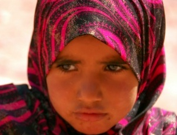

|
|

مبارزه زنان اردنی برای کسب حق تابعیت برابر
Jenny Gustafsson / ترجمه: ژاله معصومی
سه شنبه2 اسفند 1390
تغییر برای برابری: همانند سایر کشورهای همسایه، کشور اردن نیز قوانین تبعیض آمیز علیه زنان بسیار دارد . علیرغم اینکه قانون اساسی کشور تابعیت را به عنوان یک حق انسانی به رسمیت می شناسد، اردنی ها به واسطه جنسیتشان مورد رفتار تبعیض آمیز قرار می گیرند. مردهایی که با زنان غیراردنی ازدواج می کنند و صاحب فرزند می شوند ، تابعیتشان نیز به فرزندانشان منتقل می شود، اما به زنان این اجازه داده نمی شود.
نرمین مراد به مجله محلی JO می گوید رفتار برابر وجود ندارد. او مسئولیت مرکز اطلاعات و تحقیق بنیاد شاه حسین را به عهده دارد. بسیاری از زنان اردنی از این قانون ضربه خورده اند. بر اساس گزارش Arab Women Organization (AWO) که در پایان سال 2009 منتشر شد 66000 زن اردنی با مردان غیر اردنی ازدواج کرده اند.تعداد زیادی ازاین زنان به اتفاق خانواده هایشان در اردن زندگی می کنند اما بدون آنکه از حقوق برابر همسر و فرزندان سایر شهرروندان اردنی برخوردار باشند. در گزارش AWO که در سال 2010 منتشر شد 94 درصد از این زنان در مصاحبه ای گفته اند که آنان نگران آینده نامشخص فرزندانشان به دلیل عدم برخورداری از تابعیت اردنی هستند.
ملکه با مقاومت روبرو شد
کنش گران زیادی در جامعه اردن، از جمله کنش گران سیاسی در جهت حل این مسئله تلاش می کنند. در جلسه گشایش AWO ملکه اردن، رانیا، قول داد که تغییراتی در قانون داده شود که به زنان حق انتقال تابعیت اردنی به فرزندانشان (نه به همسرانشان) داده شود. اما این پیشنهاد با مخالفت شدید روبرو شده و فقط منجر به این شد که تحت شرایط خاصی تقاضای تابعیت داده شود. جامعه اردن از نظر اجتماعی و مذهبی جامعه ای محافظه کار است، چیزی که مانعی در مبارزه برای کسب حقوق برابر در قانون می شود. اما قوی ترین استدلال ترکیب جمعیتی اردن است. تعداد پناهندگان در اردن به نسبت جمعیت آن بیش از هر کشور است و سوالاتی در زمینه هویت و ملیت بشدت سیاسی است. بزرگترین گروهی که به اردن پناهنده شده اند فلسطینی ها هستند که بعد از اشغال کشوران توسط اسراییل در سال 1948 و پس از آن مجبور به ترک کشورشان شدند. امروزه بیش از نیمی از جمعیت اردنی ریشه فلسطینی دارند.

تعداد زیادی از ازدواجهای دو ملیتی بین اردنیها و فلسطینی هاست، امری که مبارزه برای تصویب قانون برابر را مشکل می کند. به گفته منبعی از وزارت امور خارجه به AWO قانون نابرابر " نه بر اساس تبعیض علیه زنان بلکه یک مسئله سیاسی است که مرتبط با شرایط خاورمیانه می باشد".
مسئله حفظ بقاء
برای کسانی که در جهت تصویب قانون برابر مبارزه می کنند این استدلال قابل قبول نیست: ازدواج مردان اردنی با زنان فلسطینی به همان میزان معمول است. نرمین مراد می گوید – یک زن فلسطینی می تواند با مرد اردنی ازدواج کرده و تاببعیت اردنی بگیرد، و فرزندانشان بطور اتوماتیک تابعیت اردنی اخذ می کنند. صرفنظر از علت عواقب این امر فراوان و زیان آور است. زنان و خانواده هایشان از امکانات مساوی مسافرت به خارج از کشور برخوردار نیستند، انها مورد بازجویی قرار گرفته و در مواردی خطر بازداشت شدنشان نیز وجود دارد. امکان تحصیل و کار، دسترسی به دارو ودرمان ، بدون داشتن تابعیت، محدودتر است. شرایط برای خانواده هایی که از نظر اجتماعی-اقتصادی تحت فشار هستند، سختتر است. بر اساس مطالعات AWO امکان برخورداری از حق تابعیت برای این خانواده ها برابر با حفظ بقاء آنان بود. آن عده که در فقر زندگی می کنند روزانه با این سوال مواجه می شوند که حقوق برابر اقتصادی آنان به تابعیتشان گر خورده است. احساس شهروند مشروع نبودن در کشور خود از طرف زنان شرکت کننده در این تحقیقات در همه گروهها بیان شد. یکی از این زنان گفت - با من به عنوان یک انسان برخورد نمی شود از آنجایی که من می بایست از میان رویه های وزارت کشور عبور کنم.
همزمان با اعتراضات 2011 مردم در کشورهای عربی، زنان اردنی به امکانات جدیدی را در جهت پیشبرد این سوال دست یافته اند. اگر چه در اردن اعتراغات به مانند مصر و بحرین گسترده نبوده است، اما قول رفرمهایی داده شده است. و مهمتر از همه فضای بحث و گفتگو بازتر شده است.
منبع: تارنمای سوئدی پرسپکتیو فمینیستی
http://feministisktperspektiv.se/
عکس از :xavi talleda